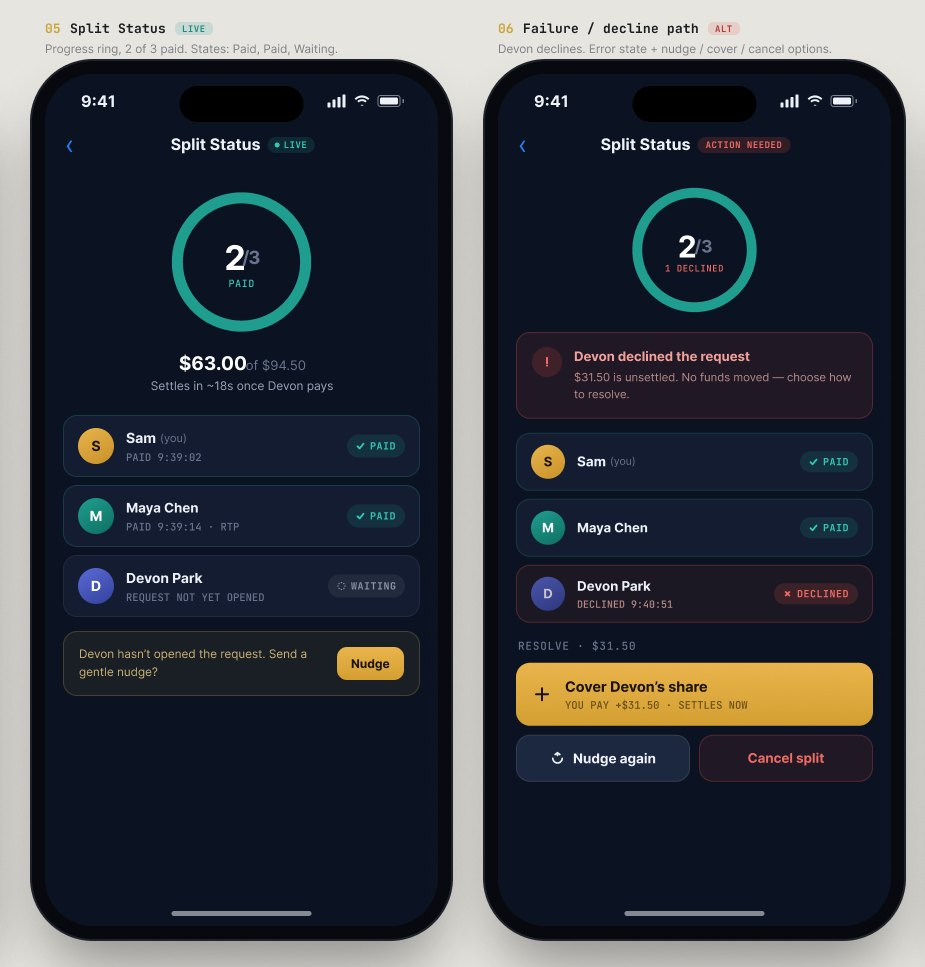
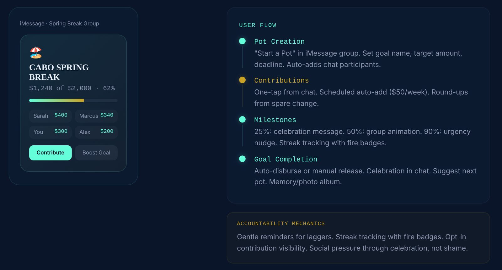

Flow
Money tools for Gen Z that live inside the group chats where shared costs already get talked about, instead of in yet another banking app.

The problem
Friends already sort out shared costs in group chats. Then they leave the chat to pay in one app, check their balance in another, and save toward trips in a spreadsheet.
Every switch is a chance to drop the task, forget who owes what, or overspend without noticing.
What I designed
- Split turns a message about a shared bill into a payment request inside iMessage.
- Safe estimates what's safe to spend and shows a short nudge right before a purchase.
- Together runs group savings goals inside the group chat, with progress and milestones.
- All three share one account and data layer, so they hand off to each other. If Safe warns that dinner will put you over budget and you go anyway, Split offers to share the cost.
Key decisions
- Build into the chat, not a new app.The conversation is where the decision happens. The cost: Flow is limited by what each platform lets a third party show, so every card had to work in a small space.
- Nudges you can wave off.Each Safe nudge offers "Skip it" or "I'm aware." The warning informs the choice without blocking it, so people don't learn to ignore it.
- Celebrate progress, don't shame.Together marks milestones and keeps each person's contribution opt-in, instead of calling out whoever is behind.
- Show money status in words, not just color.Paid, pending, waiting, declined and failed each get a label and an icon, not only teal, gold or red, so the status still reads for colorblind users and screen readers.

Designing for "no"
Most payment flows are drawn for the happy path. I spent as much time on what happens when a friend doesn't pay.
If someone hasn't opened the request, Flow doesn't nag them on its own. It asks the organizer whether to send a gentle nudge, because that's a social call, not a system one.
If someone declines, the screen says plainly that no money moved and offers three ways out: cover their share, nudge again or cancel the split. Nothing is left stuck in a half-finished state.

What exists and what doesn't. The full Split flow and its states in Figma, three clickable prototypes and a case-study site. The message parsing and spending forecast are designed, not built, and I haven't tested the concept with users yet. If I took it further, I'd start by watching five friend groups settle a real shared bill.